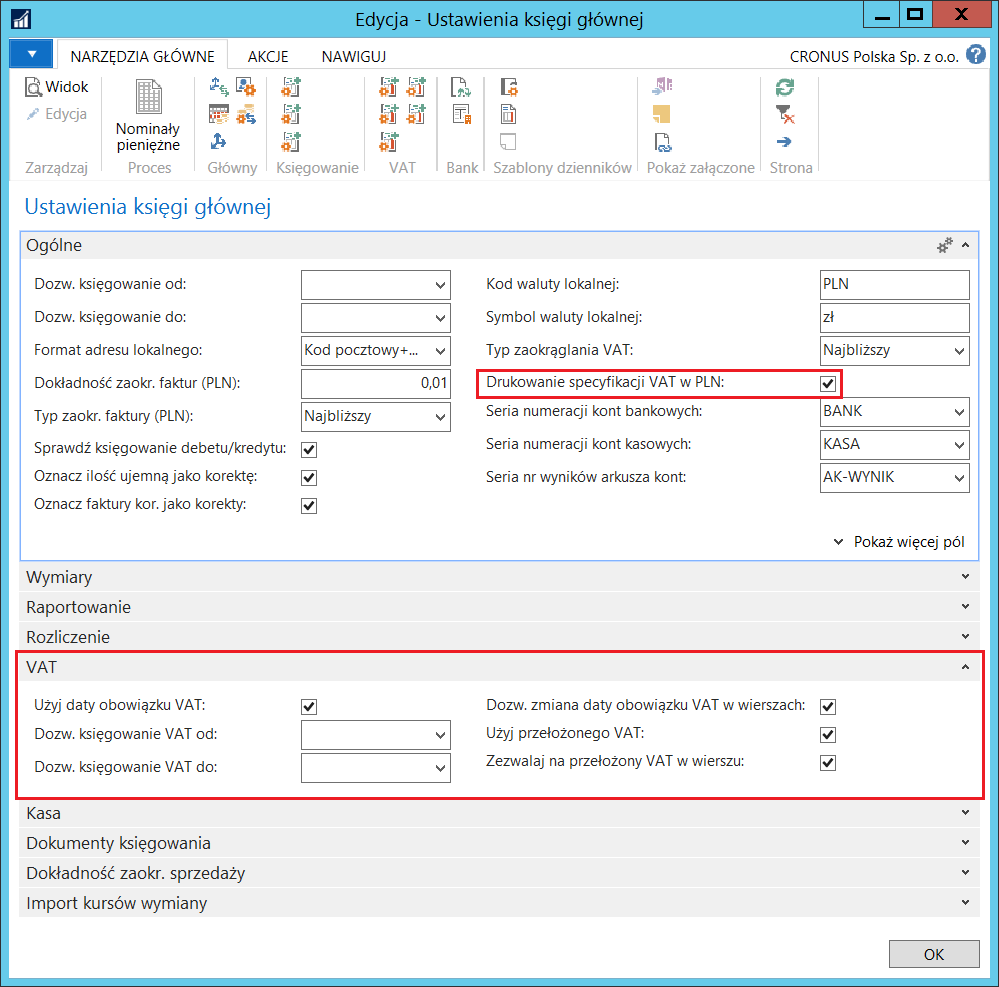
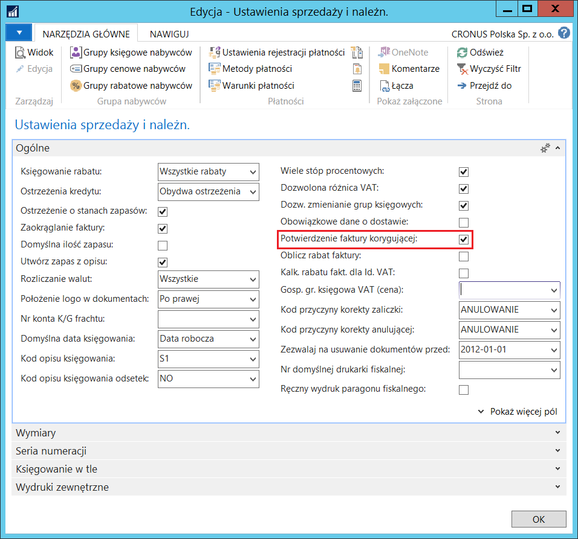
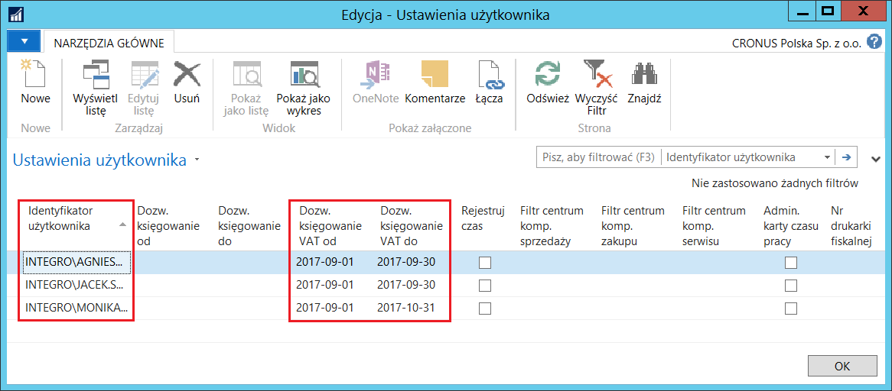
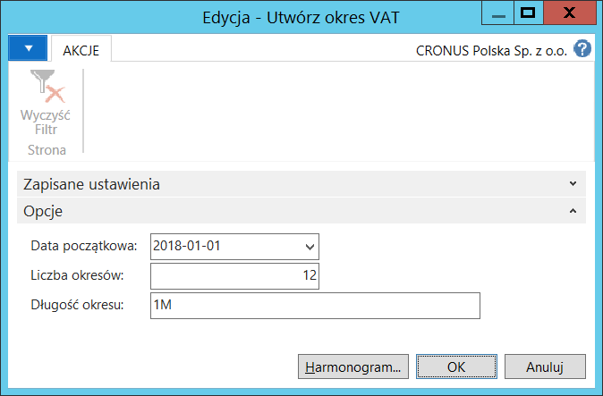
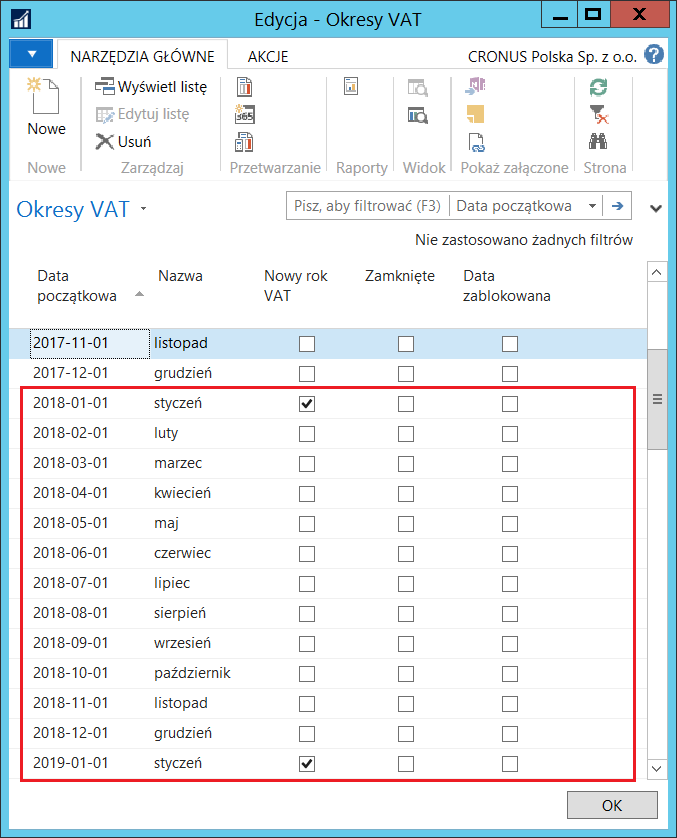
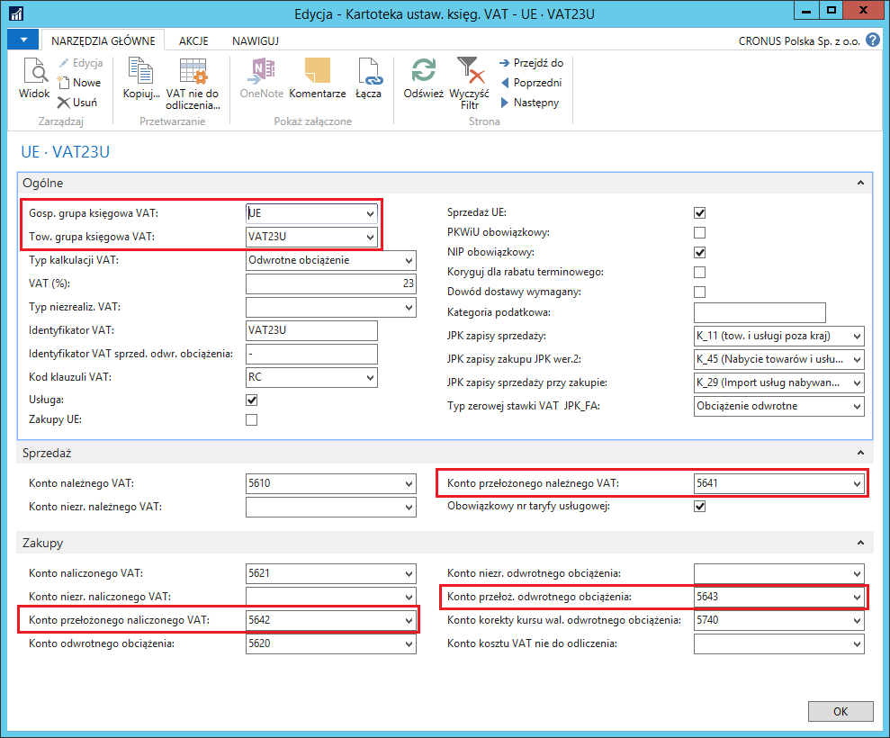
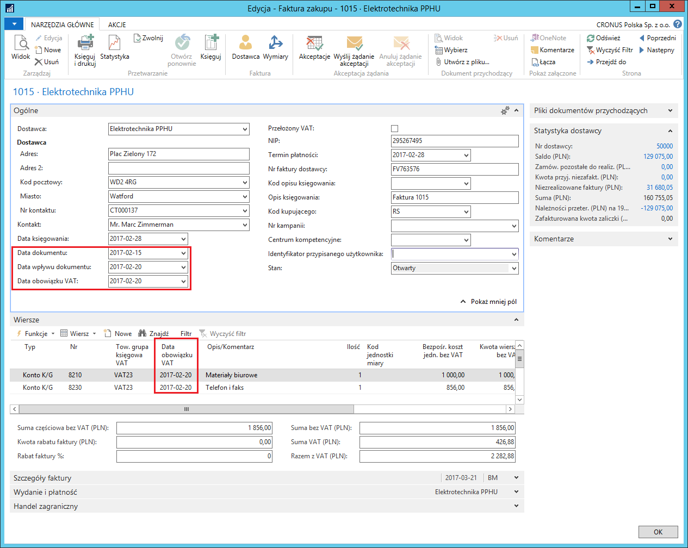
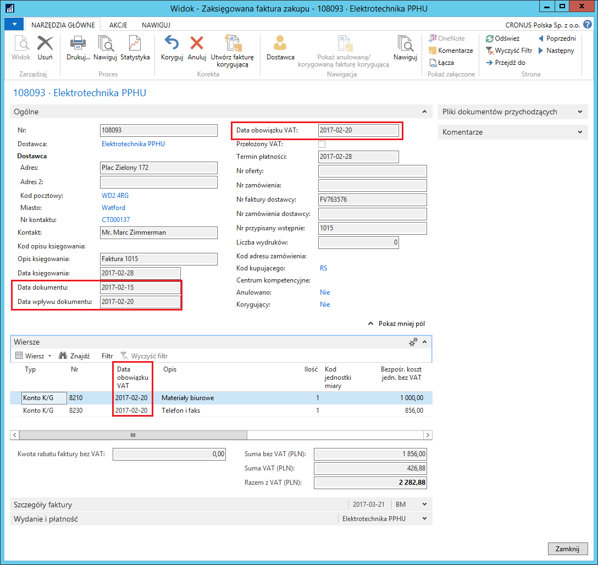
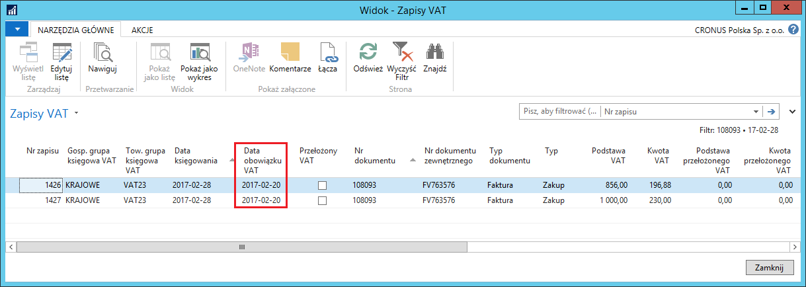

Podstawowe ustawienia i transakcje z VAT
Informacje ogólne
Funkcjonalność Data obowiązku VAT została wprowadzona ze względu na wymagania przepisów polskiego prawa, zgodnie z którymi podatek VAT może być rozliczony w innym okresie niż dokument został zaksięgowany.
Funkcjonalność Data obowiązku VAT ma wpływ na sposób obsługi poniższych elementów systemu:
Ustawienie funkcji Daty obowiązku VAT.
Księgowanie transakcji sprzedaży, zakupu i serwisu z Datą obowiązku VAT.
Przekładanie podatku VAT w fakturach korygujących sprzedaży.
Przygotowanie deklaracji VAT.
Kalkulowanie i księgowanie podatku VAT.
Uzgadnianie podatku VAT z zapisami księgi głównej.
Ustawienia
W celu ustawienia możliwości i sposobu obsługi Daty obowiązku VAT, należy postępować według następujących kroków:
Należy wybrać Działy > Zarządzanie Finansami > Administracja > Ustawienia księgi głównej.
W oknie Ustawienia księgi głównej, na karcie skróconej VAT należy wypełnić pola zgodnie z potrzebami:
Użyj daty obowiązku VAT – zaznaczenie tego pola umożliwia korzystanie z funkcjonalności Data obowiązku VAT, a system kontroluje, czy pole Data obowiązku VAT nie jest puste w transakcjach sprzedaży, zakupu i serwisu. Niezaznaczenie tego pola powoduje, że w całym systemie, we wszystkich dokumentach do pola Data obowiązku VAT kopiowana jest Data księgowania, a system uniemożliwia ręczną zmianę daty obowiązku VAT na inną.
**Dozw. księgowanie VAT od **– w tym polu należy wprowadzić datę początkową okresu, w jakim dozwolone jest rozliczanie podatku VAT z księgowanych transakcji. Pozostawienie pola pustego powoduje, że system nie kontroluje początku okresu rozliczenia VAT i istnieje ryzyko, że podatek VAT z księgowanej transakcji może zostać przypisany do okresu już rozliczonego.
**Dozw. księgowanie VAT do **– w tym polu należy wprowadzić datę końcową okresu, w jakim dozwolone jest rozliczanie podatku VAT z księgowanych transakcji. Pozostawienie pola pustego powoduje, że system nie kontroluje końca okresu rozliczenia VAT i istnieje ryzyko, że podatek VAT z księgowanej transakcji może zostać przypisany do okresu, który będzie rozliczany w dalekiej przyszłości.
Dozw. zmiana daty obowiązku VAT w wierszach – zaznaczenie tego pola spowoduje umożliwienie wprowadzenia innej daty obowiązku VAT w wierszach dokumentu, a to oznacza, że możliwe jest w takiej sytuacji rozliczenie podatku VAT z każdego wiersza jednego dokumentu w innym okresie. Domyślnie w każdym wierszu system wstawi datę obowiązku VAT taką samą, jak w nagłówku, ale pozwoli ją zmienić na inną.
Pozostawienie pustego pola spowoduje, że system będzie kontrolował, czy data obowiązku VAT w nagłówku dokumentu jest taka sama, jak w wierszach.
Użyj przełożonego VAT – zaznaczenie tego pola oznacza pozwolenie na używanie funkcji Przełożony VAT.
Uwaga
Uwaga: Funkcja Przełożony VAT wykorzystana jest do oznaczania faktur korygujących sprzedaży jako podpisane przez odbiorcę.
Zaznaczenie pola Użyj przełożonego VAT możliwe jest tylko w sytuacji, gdy zaznaczone jest pole Użyj daty obowiązku VAT.
- Zezwalaj na przełożony VAT w wierszu – zaznaczenie tego pola spowoduje, że możliwe będzie zaznaczanie lub odznaczanie pola **Przełożony VAT w **wierszach dokumentu, niezależnie od tego, czy pole Przełożony VAT w nagłówku jest zaznaczone. Domyślnie w każdym wierszu system wstawi znacznik w polu Przełożony VAT, jeśli pole to jest zaznaczone w nagłówku, ale pozwoli na zmianę w wierszach.
Na karcie skróconej Ogólne jest pole Drukowanie specyfikacji VAT w PLN – zaznaczenie tego pola powoduje, że specyfikacja VAT na dokumentach sprzedaży wystawionych w walucie obcej drukowana jest w PLN.

Należy wybrać Działy > Zarządzanie Finansami > Administracja > Ustawienia sprzedaży i należności.
W oknie Ustawienia sprzedaży i należn., na karcie skróconej Ogólne należy zaznaczyć pole Potwierdzenie faktury korygującej, jeśli podatek VAT z faktur korygujących sprzedaży ma być automatycznie traktowany jako Przełożony VAT do chwili, aż dokument zostanie podpisany przez odbiorcę.

Po zdefiniowaniu podstawowych ustawień dla Daty obowiązku VAT można, na wzór standardowej funkcjonalności dla dozwolonych okresów księgowania, ustawić dozwolone okresy VAT, czyli, oprócz ogólnego ustawienia w oknie Ustawienia księgi głównej, można definiować ustawienia dla poszczególnych użytkowników. W tym celu należy postępować według następujących kroków:
Należy wybrać Działy > Administracja > Użytkownicy > Ustawienia użytkownika.
W oknie Ustawienia użytkownika, które się otworzy, w wierszu z ustawieniami wybranego użytkownika, należy uzupełnić pola:
**Dozw. księgowanie VAT od **– w tym polu należy wprowadzić datę początkową okresu, w jakim dozwolone dla wybranego użytkownika jest rozliczanie podatku VAT z księgowanych transakcji. Pozostawienie pola pustego powoduje, że system nie kontroluje początku okresu rozliczenia VAT i istnieje ryzyko, że podatek VAT z księgowanej transakcji może zostać przypisany do okresu już rozliczonego.
**Dozw. księgowanie VAT do **– w tym polu należy wprowadzić datę końcową okresu, w jakim dozwolone jest rozliczanie podatku VAT z księgowanych transakcji. Pozostawienie pola pustego powoduje, że system nie kontroluje końca okresu rozliczenia VAT i istnieje ryzyko, że podatek VAT z księgowanej transakcji może zostać przypisany do okresu, który będzie rozliczany w dalekiej przyszłości.
Uwaga
Jeśli obydwa pola: Dozw. księgowanie VAT od i Dozw. księgowanie VAT do są puste w wierszu z ustawieniami wybranego użytkownika w oknie Ustawienia użytkownika, system traktuje to jako brak ustawienia szczególnego okresu VAT dla tego użytkownika i stosuje dla niego dozwolony okres ustawiony w oknie Ustawienia księgi głównej.
Ustawienia zdefiniowane w oknie Ustawienia użytkownika mają wyższy priorytet niż ustawienia zdefiniowane w oknie Ustawienia księgi głównej. Oznacza to, że dla wybranych użytkowników można ustawić inne dozwolone okresy VAT (w oknie Ustawienia użytkownika), niż obowiązujące dla pozostałych użytkowników (w oknie Ustawienia księgi głównej), nie mających specjalnych ustawień w oknie Ustawienia użytkownika.

Zdarza się, iż okresy sprawozdawcze VAT i okresy obrachunkowe się nie pokrywają. Aby ułatwić raportowanie i księgowanie VAT zgodne z okresami VAT oraz tworzenie wewnętrznych i ustawowych raportów zgodnych z okresami obrachunkowymi, w ramach funkcji Data obowiązku VAT zostały dodane Okresy VAT.
W celu ich zdefiniowania należy postępować według następujących kroków:
Należy wybrać Działy > Zarządzanie Finansami > Administracja > Okresy VAT.
W oknie Okresy VAT, które się otworzy, należy wybrać Utwórz okresy.
W oknie Utwórz okres VAT, które się otworzy, należy wypełnić pola:
Data początkowa – w tym polu należy wprowadzić datę początkową roku rozliczeniowego dla podatku VAT
Liczba okresów – w tym polu należy wprowadzić ilość okresów, które składają się na rok rozliczenia podatku VAT
Długość okresu – w tym polu należy wprowadzić formułę, na podstawie której zostanie obliczona długość jednego okresu roku rozliczenia podatku VAT, np. 1M = 1 miesiąc, 3M = 3 miesiące itp.

- Zatwierdzenie przyciskiem OK w poprzednim oknie, powoduje automatyczne dodanie kolejnych wierszy w oknie Okresy VAT, zgodnie z wprowadzonymi parametrami podczas tworzenia okresów:

Dla podatku VAT zaksięgowanego z transakcji oznaczonych jako Przełożony VAT, konieczne jest wskazanie kont księgi głównej, które mogą być inne niż te przeznaczone do księgowania zwykłego podatku VAT należnego i naliczonego. W tym celu należy postępować według następujących kroków:
Należy wybrać Działy > Zarządzanie Finansami > Administracja > Ustawienia księgowe VAT.
W oknie Ustawienia księgowe VAT, które się otworzy, należy zaznaczyć wiersz z wybraną kombinacją kodów w polach Gosp. grupa księgowa VAT i Tow. grupa księgowa VAT, a następnie wybrać Edycja.
W oknie Kartoteka ustaw. księg. VAT, które się otworzy, na karcie skróconej Sprzedaż należy uzupełnić pole Konto przełoż. należnego VAT, a na karcie skróconej Zakupy należy uzupełnić pola: Konto przełoż. naliczonego VAT i Konto przełoż. odwrotnego obciążenia. W wymienionych polach można rozwinąć listę kont księgi głównej i wybrać spośród nich właściwe.

Obsługa
Aby księgować transakcje zakupu, sprzedaży i serwisu z wykorzystaniem funkcjonalności Data obowiązku VAT, użytkownik musi mieć możliwość wprowadzania daty obowiązku VAT we wszystkich właściwych oknach w systemie: nagłówkach i wierszach dokumentów, wierszach dzienników itp. W celu zaksięgowania np. transakcji zakupu z użyciem funkcjonalności Data obowiązku VAT, należy postępować według następujących kroków:
Należy wybrać Działy > Zarządzanie Finansami > Zobowiązania > Faktury zakupu.
W oknie, które się otworzy, należy wybrać Nowe i standardowo wprowadzić dane o fakturze zakupu.
Na karcie skróconej Ogólne pole Data obowiązku VAT jest wypełniane automatycznie przez system. Przyjmowana jest wartość z pola Data dokumentu lub z pola Data wpływu dokumentu, w zależności od tego, która z nich jest późniejsza. Należy zmienić datę w polu **Data obowiązku VAT na **inną niż domyślna.
Na karcie skróconej Wiersze, należy zwrócić uwagę na pole Data obowiązku VAT – powinno przyjąć wartość taką samą, jak w polu Data obowiązku VAT na karcie skróconej Ogólne. Jeśli w ustawieniach dozwolona jest zmiana daty obowiązku VAT w wierszach, należy zmienić datę w polu Data obowiązku VAT na inną niż domyślna.

Należy zaksięgować fakturę zakupu.
Należy sprawdzić daty obowiązku VAT w zaksięgowanej fakturze zakupu. W tym celu należy wybrać Działy > Zarządzanie Finansami > Archiwum > Zaksięgowane faktury zakupu.
Wybraną zaksięgowaną fakturę zakupu należy wyświetlić w formie kartoteki:

- Można też sprawdzić, jak daty obowiązku VAT zostały zapisane w oknie Zapisy VAT. W tym celu, w zaksięgowanej fakturze zakupu należy wybrać Nawiguj, następnie należy zaznaczyć wiersz Zapis VAT i wybrać Pokaż powiązane zapisy:

Uwaga
Pole Data obowiązku VAT jest dostępne do edycji w następujących dokumentach: Zamówienie zakupu, Faktura zakupu, Zamówienie zwrotu zakupu, Faktura korygująca zakupu, Zamówienie sprzedaży, Faktura sprzedaży, Zamówienie zwrotu sprzedaży, Faktura korygująca sprzedaży. Datę obowiązku VAT można też edytować w wierszach dzienników głównych oraz w oknie VAT-dodatkowe informacje.
Po zaksięgowaniu transakcji z VAT, data obowiązku VAT zapisywana jest w zaksięgowanych dokumentach: Zaksięgowana faktura zakupu, Zaksięgowana faktura korygująca zakupu, Zaksięgowana faktura sprzedaży, Zaksięgowana faktura korygująca sprzedaży. Data obowiązku VAT zapamiętana jest również w tabelach: Zapis VAT oraz Szczegółowy zapis VAT.
VAT pochodzący z różnych transakcji może być rozliczany w okresie innym niż księgowana jest transakcja podlegająca opodatkowaniu. Okres rozliczenia zależy od różnych czynników i może być ustalany w różny sposób. W sytuacji, gdy okres rozliczenia podatku VAT zależy od terminu zapłaty, zastosowanie mają ustawienia związane z VAT niezrealizowanym, a kwota podatku może być księgowana na odrębnych kontach. W sytuacji, gdy okres rozliczenia VAT jest znany w momencie księgowania transakcji, można od razu wybrać okres rozliczenia wprowadzając właściwą datę obowiązku VAT, która może różnić się od daty księgowania. W sytuacji, gdy z jakichś przyczyn okres rozliczenia VAT nie jest znany w momencie księgowania transakcji podlegającej opodatkowaniu, można użyć funkcjonalności przełożonego VAT, a podatek może być zaksięgowany na odrębnym koncie KG. Zasady te dotyczą zarówno normalnego VAT, jak i odwrotnego obciążenia. W oknie Kartoteka ustaw. księg. VAT dla każdej kombinacji grup Gosp. grupa księgowa VAT i Tow. grupa księgowa VAT można przypisać oddzielne konta KG do księgowania kwoty podatku VAT przełożonego i niezrealizowanego, dotyczy to również odwrotnego obciążenia, która też może być przełożona lub niezrealizowana.
W sytuacji, gdy podatek VAT jest jednocześnie przełożony i niezrealizowany, konieczne jest zachowanie właściwej kolejności w jego realizacji: najpierw realizacja przełożonego VAT (funkcją Realizuj przełożony VAT uruchamianą w oknie Arkusz rozliczania VAT), a później realizacja niezrealizowanego VAT (poprzez rozliczenie należności lub zobowiązania z płatnością). Polska Lokalizacja w ramach obsługi podatku VAT została wyposażona w zabezpieczenia, które nie dopuszczają innej kolejności realizacji podatku VAT.
W sytuacji, gdy kwota odwrotnego obciążenia jest jednocześnie przełożona i niezrealizowana, obowiązują zasady opisane powyżej. Jeżeli w odwrotnym obciążeniu wystąpiła różnica w kursie wymiany, może ona zostać zaksięgowana po realizacji przełożonego i niezrealizowanego VAT.